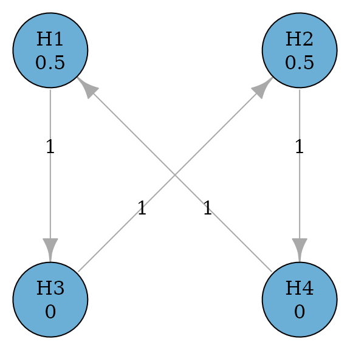
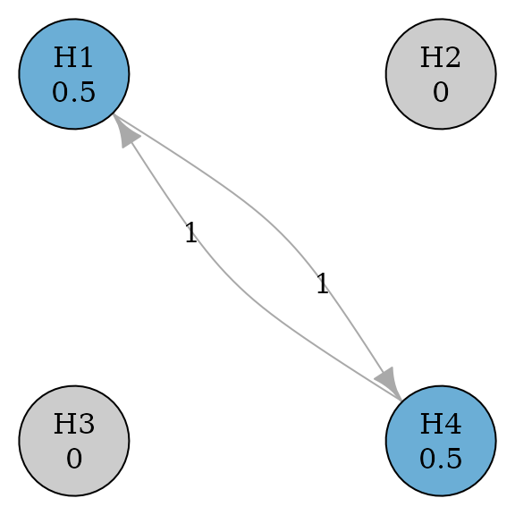

Introduction
Graphical approaches for multiple comparison procedures (MCPs) are a
general framework to control the familywise error rate strongly as a
pre-specified significance level \(0<\alpha<1\). This approach includes
many commonly used MCPs as special cases and is transparent in
visualizing MCPs for better communications. graphicalMCP is
designed to design and analyze graphical MCPs in a flexible, informative
and efficient way.
Basic usage
Initial graph
The base object in graphicalMCP is an
initial_graph, which consists of a vector of hypothesis
weights and a matrix of transition weights (Bretz
et al. 2009). This object can be created via
graph_create(). In the graphical representation, hypotheses
are denoted as nodes (or vertices) associated with hypothesis weights. A
directed edge from a hypothesis to another indicates the direction of
propagation of the hypothesis weight from the origin hypothesis to the
end hypothesis. The edge is weighted by a transition weight indicating
the proportion of propagation.
library(graphicalMCP)
# A graph of two primary hypotheses (H1 and H2) and two secondary hypotheses (H3 and H4)
hypotheses <- c(0.5, 0.5, 0, 0)
transitions <- rbind(
c(0, 0, 1, 0),
c(0, 0, 0, 1),
c(0, 1, 0, 0),
c(1, 0, 0, 0)
)
hyp_names <- c("H1", "H2", "H3", "H4")
example_graph <- graph_create(hypotheses, transitions, hyp_names)
example_graph
#> Initial graph
#>
#> --- Hypothesis weights ---
#> H1: 0.5
#> H2: 0.5
#> H3: 0.0
#> H4: 0.0
#>
#> --- Transition weights ---
#> H1 H2 H3 H4
#> H1 0 0 1 0
#> H2 0 0 0 1
#> H3 0 1 0 0
#> H4 1 0 0 0
plot(example_graph, vertex.size = 60)
Update graph
When a hypothesis is removed from the graph, hypothesis and transition weights of remaining hypotheses should be updated according to Algorithm 1 in Bretz et al. (2011). For example, assume that hypotheses H1, H2 and H4 are removed from the graph. The updated graph after removing three hypotheses is below.
updated_example <- graph_update(
example_graph,
delete = c(TRUE, TRUE, FALSE, TRUE)
)
updated_example
#> Initial and final graphs -------------------------------------------------------
#>
#> Initial graph
#>
#> --- Hypothesis weights ---
#> H1: 0.5
#> H2: 0.5
#> H3: 0.0
#> H4: 0.0
#>
#> --- Transition weights ---
#> H1 H2 H3 H4
#> H1 0 0 1 0
#> H2 0 0 0 1
#> H3 0 1 0 0
#> H4 1 0 0 0
#>
#> Updated graph after deleting hypotheses 1, 2, 4
#>
#> --- Hypothesis weights ---
#> H1: NA
#> H2: NA
#> H3: 1
#> H4: NA
#>
#> --- Transition weights ---
#> H1 H2 H3 H4
#> H1 NA NA NA NA
#> H2 NA NA NA NA
#> H3 NA NA 0 NA
#> H4 NA NA NA NA
plot(updated_example, vertex.size = 60)
Perform graphical MCPs
Given the set of p-values of all hypotheses, graphical MCPs can be
performed using graph_test_shortcut() to determine which
hypotheses can be rejected at the significance level alpha.
Assume p-values are 0.01, 0.005, 0.03, and 0.01 for hypotheses H1-H4.
With a one-sided significance level alpha = 0.025, rejected
hypotheses are H1, H2, and H4. More details about the shortcut testing
can be found in vignette("shortcut-testing").
test_results <- graph_test_shortcut(
example_graph,
p = c(.01, .005, .03, .01),
alpha = .025)
test_results$outputs$rejected
#> H1 H2 H3 H4
#> TRUE TRUE FALSE TRUEA similar testing procedure can be performed using the closure
principle. This will allow more tests for intersection hypotheses, e.g.,
Simes, parametric and a mixture of them. If the test type is Bonferroni,
the resulting closed procedure is equivalent to the shortcut procedure
above. Additional details about closed testing can be found in
vignette("closed-testing").
test_results_closed <- graph_test_closure(
example_graph,
p = c(.01, .005, .03, .01),
alpha = .025,
test_types = "bonferroni",
test_groups = list(1:4)
)
test_results_closed$outputs$rejected
#> H1 H2 H3 H4
#> TRUE TRUE FALSE TRUEPower simulations
With multiplicity adjustment, such as graphical MCPs, the “power” to
reject each hypothesis will be affected, compared to its marginal power.
The latter is the power to rejected a hypothesis at the significance
level alpha without multiplicity adjustment. The marginal
power is usually obtained from other pieces of statistical software.
graph_calculate_power() performs power simulations to
assess the power after adjusting for the graphical MCP (Bretz, Maurer, and Hommel 2011). Assume that
the marginal power to reject H1-H4 is 90%, 90%, 80%, and 80% and all
test statistics are independent of each other. The local power after the
multiplicity adjustment is 87.7%, 87.7, 67.2%, and 67.2% respectively
for H1-H4. Additional details about power simulations can be found in
vignette("shortcut-testing") and
vignette("closed-testing").
set.seed(1234)
power_results <- graph_calculate_power(
example_graph,
sim_n = 1e6,
power_marginal = c(.9, .9, .8, .8)
)
power_results$power$power_local
#> H1 H2 H3 H4
#> 0.875760 0.876295 0.670470 0.671431